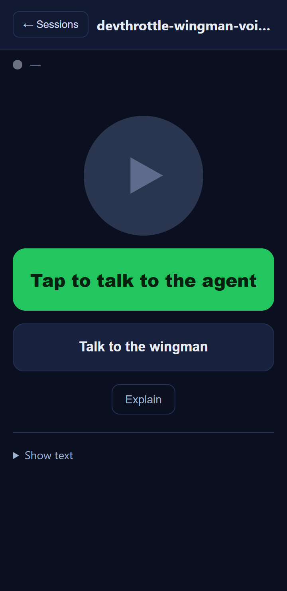
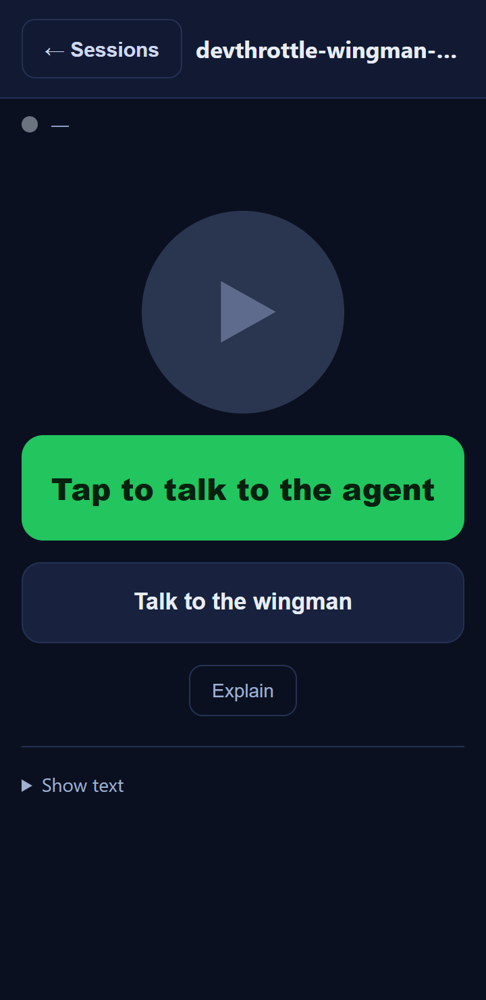

On the Wingman Voice mobile session screen (/m/), the session-view "Sessions" back
button (#back-btn) used the small .ghost style (font-size 13px, padding
8px 12px - roughly a 33px tall control). It is now a comfortably large touch target.
.back-btn rule:
min-height:44px; min-width:44px; padding:10px 16px; font-size:15px; font-weight:600;
border-radius:10px; flex:0 0 auto; with centered inline-flex content and
white-space:nowrap. It keeps the existing .ghost color identity
(transparent background, --border outline, --text2 text) - only larger.
flex:0 0 auto stops the bar from squeezing it, so the session name keeps its ellipsis.back-btn class to the
button (class="ghost back-btn") and bumped the asset cache-bust version from
v17 to v18 (the m.css?v= / m.js?v= query strings
and the on-screen <span class="ver"> label).No server-side change. The list-screen Refresh ghost button and all other controls are untouched.
| Criterion | Expected | Actual (measured at 360px CSS width) | Result |
|---|---|---|---|
Back button visibly larger than the old .ghost and a touch target of at least 44 x 44 CSS px |
>= 44 x 44 px; visibly bigger than before | Before: 95 x 33 px. After: 119 x 44 px (getBoundingClientRect). Height meets the 44px minimum; width comfortably exceeds it. | PASS |
Tapping still returns to the session list (#list-view visible, #session-view hidden) |
list shown, session hidden | After a programmatic click: listHidden=false, sessionHidden=true.
Behavior unchanged (markup id and handler untouched). |
PASS |
| Complies with the page's visual conventions (colors, radius, spacing) | Same ghost color identity, consistent radius/spacing | Reuses .ghost colors (--border outline, --text2 text,
transparent background); border-radius:10px matches the page's
.explain control; sizing is in line with the page's other large touch targets.
VisualStyle.md is WPF-scoped and specifies no mobile touch-target height, so the issue's
44px accessible-minimum is used (assumption confirmed in the issue body). |
PASS |
| Header bar does not break/overflow at 360px; name still ellipsizes and the bar stays on one row | no horizontal overflow; name ellipsized; one row | At a 360px viewport with a long session name: document width = 360 (no overflow),
nameEllipsized=true, bar height a single row (73px including sticky padding). |
PASS |
| Asset cache-busting version incremented | v17 -> v18 on css/js query and on-screen label | m.css?v=18, m.js?v=18, and the visible v18 label. |
PASS |

.ghost back button: 95 x 33 px.
.back-btn: 119 x 44 px. Header still one row,
session name still ellipsized.Screenshots were taken by serving the actual wwwroot/m/ files and rendering
/m/index.html with the real m.css?v=18 at a 360px mobile viewport. The
"before" capture removed only the new back-btn class so the old .ghost-only
sizing is shown for comparison.
No drift. Client-only static-asset (CSS + HTML) change in the cockpit container; no
architecture or security-posture change, no docs/cencon/ update required.
dotnet build cc-director.sln - Build succeeded, 0 Warning(s), 0 Error(s).